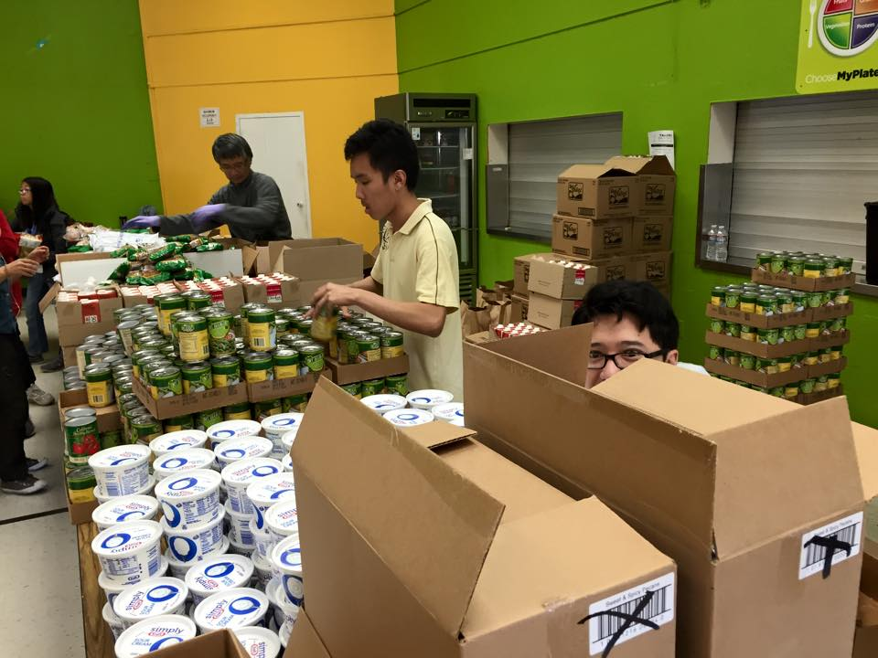
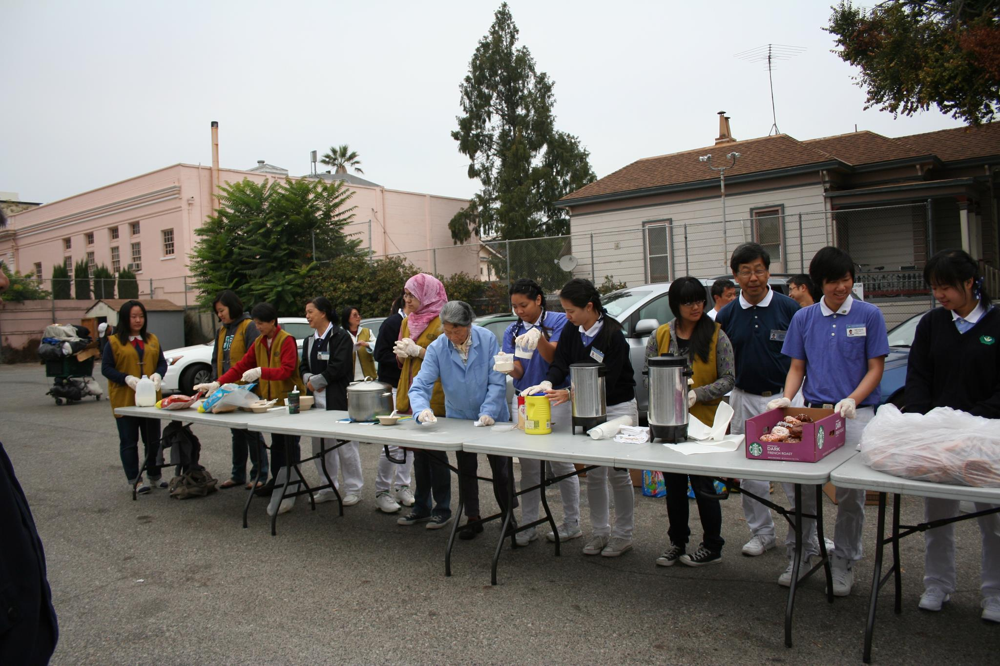
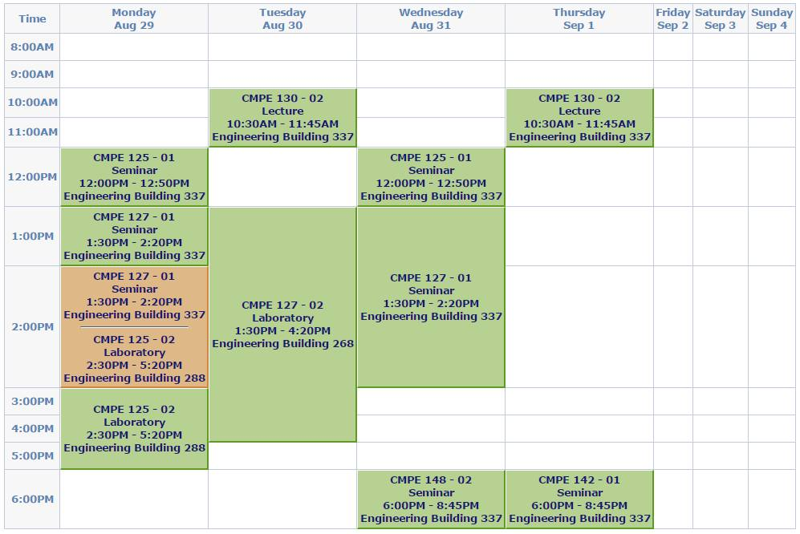
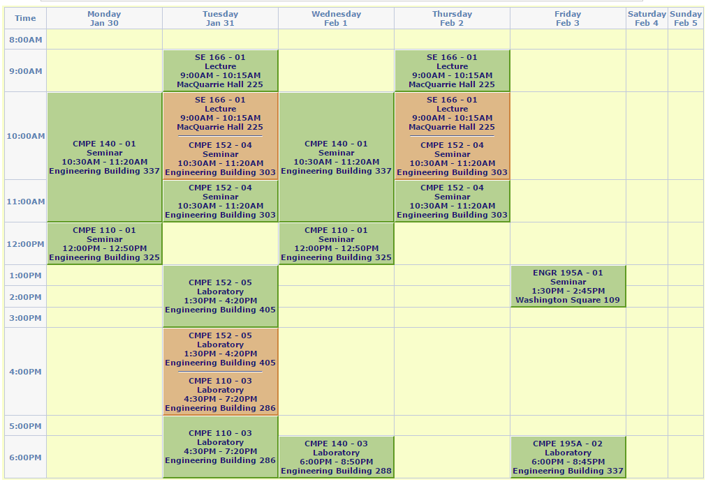

Last modified: Sat May 05 2018 12:38:01 GMT+0800 (Malay Peninsula Standard Time)
My College Life: 08/2013-03/2018
How and Why I decided to come to US
After I graduated from high school, I did not have any plan. My aunt came back on Chinese New Year the next year (2014) and suggested me to study in USA with my brother that was there when I was 13 years old. Clearly, I did not have much plans and clues what to do. So, I applied and got accepted on the only school.
I left my hometown and attended college in United States. So the first question that my friends usually ask if I miss my parents when I first came here. The truth answer is not really. I don't rely on my parents since I was young. I can get stuff done by myself since I was young. I simply chose a major to came into this school. Then, after doing a research on the internet, I decided to change my major to Computer Engineering. I planned it out on the first semester and had my major changed 1-2 years after entering college.
First Two Years
On my first two years of college, I took Humanities Honors Program, a two years program, to cover my general education program. I learnt a lot of world cultures, arts, and literatures while taking the four semesters long program. At the same time, I was talking a lot of math and physics classes. Those classes were meant to prepare me for the major courses. Math 1 & 2 and Physics 1 were very similar to what my the Math and Physics classes I took in my high school. My classmates were so impressed that I was able to solve those questions so quickly and correctly. Sometimes, I was able to just solve the questions directly on the graphing calculator without writing down anything.
I spent most of my time hanging out at my friend's place at the first few semester of my college. However, I still do spend sometimes in the library as I found that was the best place for me to get my stuff done. I volunteered at the local food bank (Santa Clara, CA) and Tzu Ching's (Tzu Chi Youth) event monthly for a few years to organize, sort, and give out food that were donated to the organization during the weekend.

Sometimes, I will attend breakfast distribution to the homeless in Downtown San Jose. I only went there once a month with a group of friends.

Last Two Years
Then, when I started to get more busy, I ended up staying in school and spent my time there 7 days a week, even during holiday. People that does not know were so impressed that I spent my weekend and holidays in the college campus during the semester peak. Here are my two recent class schedules. These are typical 5 classes (15 units) class schedule for my major.


Most of the time, the required major class came with a lecture and a lab. Each lecture was ~50 minutes long and lab was ~4 hours long. The lecture and lab usually had homework assigned differently. In the other words, each classes that contains lab and lecture, can be considered as 2 classes. Both lab and lecture may cover different materials. By comparing my schedule with other majors, especially non engineering major, you can see how busy I was during the college and why I had to stay on campus 7 days a week most of the time. On top of that, each class usually has a group project. If you were taking four major classes a semester, there will be at least three projects in a semester. Also, I did not like to take easy classes. In opinion, it was just waste of my time if there was no challenge. I love challenges and always did badly in easy classes.
I spent time with my friends regularly still as friends are usually the one that support what you are doing. Most of the time we are just hanging around on different club room on campus. It was a fun experience as you will end up meeting with more and more people, expending your network.
Working as an ISA
I started working for a professor as Instructional Student Assistance (ISA) three semesters before my graduation. I helped Professor Mak on three Software Engineering classes that he taught for two semesters and two compiler classes on the last semesters. I took a class with him a semester before I was his ISA. He was the only professor that required his students to use Ruby on Rails for Software Engineering class in the Computer Engineering. I had fun learning Ruby on Rails by myself and he then hired me to share my knowledge. Since it is very hard to pick up, I started to write my own Ruby on Rails' material and provide it to the class. Students love it and I produced even more materials. It took me a year to write all the materials and I stopped eventually as I was unable to keep up with the speed of how the software change and update. Since I learnt everything from the internet and open source community, I decided to give back to the community by putting all the material I wrote on the internet for free. This is to encourage student to pick up the programming languages and come up with something useful.
While working for Professor Mak as an ISA for his Compiler Design class in Computer Engineering and Computer Science Department on my last semester, I was referred by Professor Mak and hired by Professor Li as he was asked to teach Software Engineering class at the very last mnute.
Things I did varies based on the professors. But, they never judge and change what I had put down while I was grading the projects, midterm, in class presentation, and final examination. Professor Li gave me an opportunity to give a few lectures about Software Engineering topics (slides are available in my Rails' tutorial) to the class. Of course, I had fun sharing what I love!
Did I get paid? Yes, and very well!